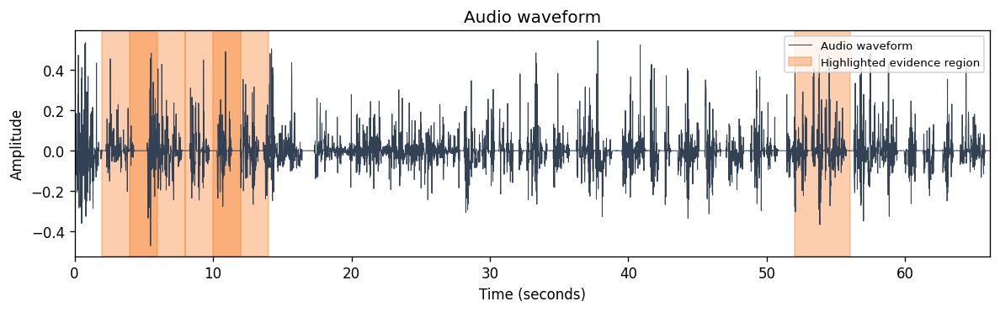

Research project: Forensic Acoustic for Synthetic Speech Detection
Case ID: P3-ai_fabricated-ai_001_fabricated
File: ai_001_fabricated.wav
Duration: 66.1141 s
Generated: 2026-06-03T19:01:42.235122+00:00
Voice origin: Likely AI-generated
Forensic indicators: AI-origin detected
Highlighted evidence region: 00:02 – 00:06
Recommendation: Manual review recommended.

| Rank | Time range | Evidence score | Review recommendation |
|---|---|---|---|
| 1 | 00:02 – 00:06 | 1.000 | Recommended |
| 2 | 00:52 – 00:56 | 1.000 | Recommended |
| 3 | 00:04 – 00:08 | 1.000 | Recommended |
| 4 | 00:08 – 00:12 | 1.000 | Recommended |
| 5 | 00:10 – 00:14 | 1.000 | Recommended |
The current release app maps the Phase 9C segment partial axis into the P6 report contract. The full P5B file-gate cascade is not used in this app path yet.
Partial module status: experimental_manual_review_only
Segment candidate only: False
Package: partial_fabrication_experimental_p5b (experimental_manual_review_only)
Safety note: Experimental evidence indicators only. Manual forensic review is recommended. Conclusive authenticity decision: no.